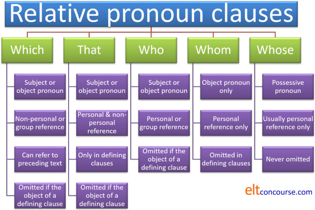

Relative pronoun clauses

 |
DefinitionsThe dog which howled all night |
Here's a definition from Parrott who avers that relative clauses are:
complex structures which allow the speaker to express themselves
succinctly and fluently
(Parrott, 2000, p. 381)
They actually do rather more than that but it's a good working definition to begin with.
Relative pronoun clauses are usually said to be clauses starting with
who(m), that, which, whose defining or identifying the
noun they follow.
Their function is one of subordination to which there is
a guide on this site.
So, for example, in
The dog which howled all night and kept me awake
The noun, dog, is rendered unique among millions of dogs
because only this one howled and caused a sleepless night.
In this sentence, the relative clause, which howled all night and
kept me awake, is acting to modify the noun, dog, and that
makes it adjectival in function. For this reason, some analyses
will refer to these structures as post-nominal adjectival modifiers (Celce-Murcia
& Larsen-Freeman, 1999, p 571) or adjective clauses (Yule, 1998, p 240).
We'll stick with relative pronoun clause here because it is more
familiar but those two descriptors are equally valid.
The key point is that relative pronoun clauses modify and/or identify an
already specified noun phrase and in that sense they are akin to
adjectival phrases.
Some languages, see below, rely on using adjectival expressions alone to do this task, having nothing remotely like the English relative pronoun structures. For speakers from these language backgrounds, the concepts and meaning are, initially, at least, obscure.
If you are wondering why where, when and how are not
in the list above, the answer is that these words are analysed elsewhere
in the guide to relative adverbs.
Relative pronouns, as the name
implies, are words which stand for a noun, a gerund, a noun phrase or a
nominalised clause (i.e., different sorts of nouns).
If the word refers to why, where, when or how an action is carried out
or a state exists, it is an adverb, not a pronoun and does not belong
here.
That relative pronouns and relative adverbs appear to be related is not
in question but relative adverbs function differently and perform
different grammatical tasks. Relative adverbs cannot, for example, appear as
the objects or subjects of verbs (because they aren't nouns of any
sort). One relative adverb, how, cannot refer to a noun
at all.
As we shall shortly see, relative pronouns are distinguished by the
functions they perform in sentences, technically their relationship to
the arguments (most commonly subject, direct object, indirect object
etc.).
Understanding how to use them relies on being able to untangle
the grammatical functions of phrases and clauses in sentences.
 |
 |
|
Again, the terminology varies. Here, we will use defining and
non-defining because the terms are the most familiar but the three pairs
of ways to describe the fundamental types are synonymous.
Here are four sentences to compare:
- The Statue of Liberty, which stands in New York, is well known.
- The Statue of Liberty which stands in New York is well known.
- The statue of Gandhi which stands in Tavistock Square is well known.
- The statue of Gandhi, which stands in Tavistock Square, is well known.
Before you go on, decide which of those sentences you are happy to accept.
What's the difference in meaning between these pairs of sentences? Click here when you have an answer.
- At the first meeting, which was held yesterday, the chair invited comments from everyone.
- At the first meeting which was held yesterday the chair invited comments from everyone.
- The kids, who came with me, had lunch on the train.
- The kids who came with me had lunch on the train.
- Sentence 1
- contains a non-defining relative
clause. The fact that the meeting was held
yesterday is additional information which can be ignored
because the sentence makes sense without it.
We can put the relative clause in brackets with no change in meaning:
At the first meeting (which was held yesterday) the chair invited comments from everyone. - Sentence 2
-
contains a
defining relative clause.
We are only talking about the first meeting which was held yesterday.
Other meetings were held yesterday but we are only concerned with
the first of these. If we move the
constituents of the sentence around, we have to move the whole
prepositional phrase:
The chair invited comments from everyone at the first meeting which was held yesterday. - Sentence 3
- contains a non-defining relative clause. The only kids in question are those who came with me. All the kids had lunch on the train and the extra information that they came with me is additional (and it could appear in brackets, like this)
- Sentence 4
- contains a defining relative clause. There were other kids (who came alone or with someone else) who had no lunch / had lunch somewhere else. I only know that the kids who came with me had lunch.
In this guide, we are distinguishing between defining and non-defining relative clauses. These are often called restrictive and non-restrictive clauses respectively.
Now look again at the first four sentences concerning statues and decide what the issue was. Here's the comment:
| Sentence | Issue |
| The Statue of Liberty, which stands in New York, is well known. | The clause between the commas is simply adding information concerning the location of something known to us all. |
| The Statue of Liberty which stands in New York is well known. | There is only one such statue so to omit the commas would be wrong. You cannot define that which is unique. |
| The statue of Gandhi which stands in Tavistock Square is well known. | There are many statues of Gandhi around the world so to define a particular one by where it is is acceptable. |
| The statue of Gandhi, which stands in Tavistock Square, is well known. | This is also acceptable. Here we are talking about a statue of Gandhi but adding information to say where it is, not defining it. |
Try another slightly different
example:
In the following, why is it not possible to take out the commas in
the first sentence or to insert them in the second? Click
when you have an answer.
- The Nile, which runs through Egypt to the Mediterranean, is vital to the country’s prosperity.
- The man who asked me to marry him on that memorable evening is still my husband.
In Sentence 5, we know there is
only one Nile so we don't need to define it. In fact, defining
it by omitting the commas implies that there is another Nile river
somewhere. The subject of the verb is in the first case is
simply The Nile.
In Sentence 6, we need to identify
the complement of the verb is. The
complement of the verb is is not the man, it is the man who
asked me to marry him.
Defining (restrictive / identifying) relative pronoun clauses are by far the most common.
 |
Meaning |
The difference between restrictive / defining and non-restrictive
/ non-defining relative clauses is not just a grammatical wrinkle in
English because the meaning the speaker / writer conveys differs
very significantly depending on which type of clause is used.
The key point is that defining clauses give required
information whereas non-defining clauses give additional
information.
The distinction is a familiar one concerning given and new
information.
For example, in these two sentences, we have a clear distinction in meaning:
- The woman, who arrived at the hotel this evening, has gone out
- The woman who arrived at the hotel this evening has gone out
In sentence a., both speaker and hearer are aware of the existence of
the woman and know to whom reference is being made. The
information about the hotel is new.
In sentence b., this is not the case and the speaker selects the grammar
accordingly because the necessary information to distinguish which woman
is being spoken of is needed for comprehension. The assumption in
sentence b. is that the hearer already knows about the woman and
that she arrived at the hotel. The only new information is that
she has gone out.
This is even clearer when we use names rather than common nouns.
Compare, for example:
- Margaret, who arrived at the hotel this evening, has gone out
- Margaret who arrived at the hotel this evening has gone out
In sentence c., the person referred to is known to both speaker and
hearer and the information about the hotel is peripheral but probably
new to the hearer (why else state it?).
Sentence d. is very strange and it is difficult to imagine it ever being
produced unless there are two Margarets to whom reference may be being
made and the speaker needs to disambiguate to refer only to one of them.
In this case, the speaker assumes that the hearer knows there are two
possible people called Margaret to whom reference is being made
and that one of them arrived at the hotel and one did not.
One way to explain this distinction to learners whose languages may
not make any distinction at all between the two types of clause is to
consider a simple attributive adjective phrase in a sentence such as:
The hardworking students passed the examination
which is ambiguous because this may mean either:
The students who worked hard passed the examination
(and other students, less hardworking, did not)
or
The students, who worked hard, passed the examination
(all of them)
It is difficult to signal what is meant by intonation n the adjective
phrase, although stressing the adjective strongly might show that a
restrictive meaning is intended. In the written form, no
punctuation changes can be made to show what is meant, although one
could resort to underlining or other emphasis markers.
The two relative pronoun clauses are much more easily distinguished by
intonation and punctuation signals. See below.
 |
Next question |
If you use phrases like all of which, either of whom, both of which, the majority of whom, none of which, etc., would you normally expect to separate the clause off with commas or not? Click here when you have an answer.
Expressions like some
of, many of + the relative
pronoun often introduce non-defining clauses so we get, e.g.,
The children,
all of whom had lunch in the park, went on to visit the museum.
The men, either of whom could
have been her brother, arrived very late.
The houses, the majority of which are Victorian, line both sides of
the street.
So, yes, we need the commas because we do not define the noun
with these expressions, we add information to it.
 |
Pronunciation |
In written English, commas are used to distinguish the two types. How does this work in spoken English? Click here when you have an answer.
In
written English, commas are used in non-defining
clauses only. In spoken English, the distinction is in the phrasing
and tone or key.
Try saying sentences 1, 2, 3 and 4 aloud.
You will find that when you say a non-defining relative clause, two
things happen:
- You insert a slight pause before the relative pronoun (and often, after the relative clause itself).
- Your voice tone lowers and you may speak more quickly and quietly when you say the relative clause.
It looks like this:
- Non-defining / non-restricted relative clause:
- The voice tone falls on the relative clause and it is usually spoken
more quickly with small pauses before and after it.
In this case, the prepositional-phrase adverbial which pre-modifies the verb invited is just At the first meeting
- Defining / restricted relative clause:
-

- The voice tone rises towards the end of the relative clause and the
key information may be spoken more slowly and emphatically.
If the key information concerns the fact that this was the first meeting among many held yesterday, the pitch across the sentence may look rather different but still be distinguishable as a defining relative clause:

- In both latter cases, the adverbial phrase pre-modifying the verb invited is At the first meeting which was held yesterday.
 |
Memory test |
There are five relative pronouns in English, listed at the top of
this page – what were they?
Click here
when you have written them down.
| pronoun | use | examples |
| who | subject or object pronoun for people | The students who had the party are now living over there. |
| which | subject or object pronoun for animals and things |
|
| referring to a whole clause or previously mentioned idea (only which can do this) | They fell in love and got married the following month which surprised everyone. | |
| whom | object pronoun only for people (especially in non-defining relative clauses and formal) | Melissa, whom I met at the party, invited me. |
| whose | possession (a genitive pronoun) | Did you know the man whose sister married the vicar? |
| that | subject or object pronoun for people, animals and things in defining relative clauses (who or which are also possible) |
|
 |
Subject or Object? |
It's important to know whether the relative pronoun is acting as the
subject or the object of the verb. What's it doing in the
following examples? Look at the
underlined clauses and decide if they refer to the subject or
object of the verb phrase.
Click when you have an answer.
- The man who bought the tickets really is just being generous
- The tickets, which hopefully will allow us entry, are very welcome
- The man that we thanked seemed genuinely surprised
- The tickets which he bought were quite expensive
- Only the senior doorman, who we gave the tickets to, noticed that they were fakes
Here are the answers:
-
The man who bought the tickets really is just being generous
– subject – the pronoun who is followed by
verb phrase (bought the tickets)
We can re-phrase the first part of the sentence as
The man bought the tickets (Subject – Verb – Object) - The tickets, which hopefully will allow us entry, are very
welcome – subject again – which is followed by the
verb phrase hopefully will allow us
We can re-phrase the first part of the sentence as
The tickets will hopefully allow us entry (Subject – Verb – Object) - The man that we thanked seemed genuinely surprised – object
– that is the object of we thanked
We can re-phrase the first part of the sentence as
We thanked the man (Subject – Verb – Object) - The tickets which he bought were quite expensive –
object – which
is the object of he bought
We can re-phrase the first part of the sentence as
He bought the tickets (Subject – Verb – Object) - Only
the senior doorman, who we gave the tickets to, noticed
that they were fakes – indirect object after preposition to
We can re-phrase the first part of the sentence as
We gave the tickets to the senior doorman (Subject – Verb – Direct Object – Indirect Object)
A simple rule to tell students is:
If the relative pronoun is followed
directly by a verb phrase, it’s the
subject.
So, in
The man who just bought the car
the
relative pronoun, who, is followed directly by the verb
phrase, just bought. This means that the relative
pronoun stands for the subject of the verb.
If the pronoun is not followed by a verb phrase (but by a noun
phrase or pronoun) it is the object.
So, in
The book which she bought was a first
edition
the relative pronoun, which, is followed
by a pronoun, she, so it cannot be the subject of the
verb. The relative pronoun stands for the object of the
verb and can be, and routinely is, omitted.
 |
Omitting the pronoun |
In which of sentences 7 – 11 can you omit the relative
pronoun?
Why (not)?
Here they are again:
- The man who bought the tickets really is just being generous
- The tickets, which hopefully will allow us entry, are very welcome
- The man that we thanked seemed genuinely surprised
- The tickets which he bought were quite expensive
- Only the senior doorman, who we gave the tickets to, noticed that they were fakes
Click here when you have an answer.
In Sentences 9 and 10
only, we can omit the relative
pronoun because it is the object of a defining relative clause.
We can have, therefore
The man we thanked
or
The man that we
thanked
but we can't have
*The man bought the tickets really
is just being generous
Why?
Rule 1 is: Subject relative pronouns must
always be used.
In sentence 7, the relative pronoun is the subject so the
relative pronoun must be retained.
In Sentences 7 and 8 the relative pronoun is
the subject (followed by verb phrase) in 9, 10
and 11 it’s the object (followed by pronoun or noun phrase).
We can have
The man who bought the
tickets really is just being generous
but not
*The man bought the tickets really
is just being generous
and
The tickets, which hopefully will
allow us entry, are very welcome
but not
*The tickets, hopefully will allow
us entry, are very welcome
and
The man we thanked seemed
genuinely surprised
and
The man we that
thanked seemed genuinely surprised
and
The tickets he bought
were quite expensive
and
The tickets which
he bought were quite expensive
and
Only the senior doorman, who we
gave the tickets to, noticed that they were fakes
but not
*Only the senior doorman, we gave
the tickets to, noticed that they were fakes
Rule 2 is: Object pronouns can be dropped but
only in defining relative
clauses.
Sentence 10 is a defining relative clause so it's
OK to leave out the relative pronoun. Sentence 11 is
non-defining so the relative can't be left out.
The reason for this lies in the meaning that the two sorts of
clauses signal. We saw above that non-defining or
non-restrictive relative clauses add new information but
defining or restrictive clauses rely on the the speaker / writer
and the hearer / reader sharing the information necessary to
understand what is the subject of the clause.
In order to signal the new information contained in a
non-defining clauses, the pronoun is necessary because without
it the hearer / reader cannot know to what the new information
refers.
Is it possible to omit whose?
No.
We can have:
The man whose tickets we stole
but not
*The man tickets we stole
 |
Using that |
| The man that she met |
Here are the example sentences again with some more at the end:
- At the first meeting, which was held yesterday, the chair invited comments from everyone.
- At the first meeting which was held yesterday the chair invited comments from everyone.
- The kids, who came with me, had lunch on the train.
- The kids who came with me had lunch on the train.
- The Nile, which runs through Egypt to the Mediterranean, is vital to the country’s prosperity.
- The man who asked me to marry him on that memorable evening is still my husband.
- The man who bought the tickets really is just being generous
- The tickets, which hopefully will allow us entry, are very welcome
- The man that we thanked seemed genuinely surprised
- The tickets which he bought were quite expensive
- Only the senior doorman, who we gave the tickets to, noticed that they were fakes
- The man whom we met turned out to be his brother.
- The man who met us was his brother.
- The table which I wanted had been sold.
- The table which cost too much was the only one left.
In which of these sentences 1 – 15 can that be used as the
relative pronoun instead of who(m) or which? What's
the rule?
Click
here when you have an answer.
In sentences
2, 4, 6, 7, 9 (obviously), 10, 12, 13, 14 and 15
What’s the rule?
The pronoun that can
only be used in defining relative clauses and then it’s more informal.
By the way, there is a structure in English using that which
looks a bit like a relative clause but isn't and it will confuse
learners if you introduce it alongside proper relative pronoun clauses.
It is, for example:
It was because I felt ill that I had to go to bed
The word that is not, in this case a pronoun at all, arguably,
because there is no noun for it to represent.
It is better analysed as a cleft sentence, to which there is a guide on
this site linked in the list of related guides at the end.
 |
Prepositions in relative clauses |
The following sentences contain prepositions. How are these
significant?
What is the rule for dealing with prepositions in relatives? Click
here
when you have an answer.
- This is the car in which he arrived.
- This is the car which he arrived in.
- This is the car he arrived in.
- This is the person with whom he arrived.
- This is the person who(m) he arrived with.
- This is the person he arrived with.
Rule 1: the relative pronoun is usually the object so
it
can often be omitted, leaving only the preposition in place.
Rule 2: the preposition is moved to the end in
informal language.
Reduced relative clauses |
Consider these four sentences:
- The woman in the garden is my mother.
- The woman outside is my mother
- The kid acting the fool is my sister.
- The woman, an expert on gardening, is helping my mother
When is it possible to omit both the relative pronoun and the verb be? Click here when you have an answer.
Rule 1: if the verb be
is
followed by a prepositional or adverbial clause
Rule 2: if the verb is in the progressive
aspect
Rule 3: if the noun phrases are co-referential
There are four sorts of reduced relative clauses exemplified above:
Sentence 22. is a prepositional reduced
relative clause and can be expressed as:
The woman who is in the garden is my
mother.
Sentence 23. is an adverbial reduced
relative clause and can be expressed as
The woman who is outside is my mother
Sentence 24. is a participle reduced relative
clause and can be expressed as:
The kid who is acting the fool is my sister.
Sentence 25. is an appositive reduced relative
clause (which means that the two noun phrases are co-referential
– they refer to the same person). This can be expressed
as:
The woman, who is an expert on gardening, is helping my
mother
Prepositional, adverbial and participial relative clauses are
defining relative clauses.
Appositive relative clauses can only be non-defining
because we cannot define the subject twice.
In formal language, the commas are often replaced with brackets
in appositive clauses.
 |
Nominal or fused relative clauses |
In the analysis above, all the examples contain both the
relative pronoun and what is known as its antecedent (i.e., the
noun the relative pronoun refers to). So, for example, in
That's the man who stole my bicycle
it is clear that the man and who refer to
the same person. So, the man is the antecedent of
the pronoun who.
and in
The tickets which we sold to my brother
the antecedent of the pronoun which is the tickets.
Frequently, however, the antecedent is either understood or
simply absent. This is why clauses of this type are
sometimes called fused relative clauses (because the antecedent
and the pronoun are combined) or nominal relative clauses
(because the whole clause is acting as a noun).
Here are some examples:
As you see, nominalised or fused relative clauses fill the same grammatical slots as noun phrases (hence the name).
With nominal relative clauses certain relative pronouns are used:
- what is the most common
- who and which are also commonly used as object nominalised clauses
- the -ever series of pronouns are also frequent
Warning: some sources will include formulations such as
How(ever) you do it is your business
Whenever he comes is OK with me
but these are, in fact, relative adverbs, not relative pronouns
(and the subject of a different guide linked in the list of related guides at the end).
If the word refers to when, how or why, it is not a relative
pronoun, it's a relative adverb and they function significantly
differently. To mix them up, and hence confuse your
learners, is unwise.
Some wh- and that-clauses occur in what are known as cleft
sentences and there is guide to these on this site linked in the list of related guides at the end.
Unlike other nominal clauses, nominal relative clauses can act as the
indirect object so we allow, for example:
I'll give whoever asks a new book.
There are also structures called free relative clauses and those, too, are considered in the guide to relative adverbs because they share some characteristics. As you will see, if you go to that guide, this site takes the view that nominalisation is a better way to think about such things.
 |
The position of the relative clause |
As saw in many of the examples in the guide so far, relative
pronoun clauses can occur in mid-position in a sentence, with or
without the object pronoun. For example:
The man (whom)
you met was my boss
The book (which / that) you took
was mine.
The person who sold me the car
has left the country
etc.
Relative pronoun clauses are also frequently found in the final
position in sentences because they typically introduce new information
(and that is a common phenomenon in English called end focus).
The antecedent is commonly an indefinite pronoun such as one of the
any- or some- series or an indefinite noun phrase such as
a person, a child, a thing, a tool etc. For example:
I’m looking for someone
who can help me write a website
We need something which can act as
a counterbalance
Can you find us a local who can
show us the way?
I don't have the tool that will do
the job
Is that the man whose father is
an MP?
etc.
This position is common with an existential there is / there are
structure. For example:
Is there anyone here
who can help me?
There is something over there that
looks like a snake
There are some things
(that) I always forget to pack
etc.
By the nature of such sentences, the relative pronoun is often the
subject and cannot, therefore, be omitted.
Non-defining relative clauses almost always occur in mid-position so
we can have:
My sister, who lives in America, may be able to
help you with that
but not:
*My sister may be able to help you with that, who
lives in America
Stacking pronoun relative clauses |
Relative pronouns clauses can also be stacked in the final
position so we can have, for example:
That is the book I got from the library which I like but that
you hate
In theory, there is no limit to how many relative pronoun
clauses can be stacked in this way but native speakers stop at
two or three.
This is less common in mid-position because of the cognitive overload
produced by trying say (and understand) something like:
Have you given the food which I cooked and that you hated but
which the guests enjoyed to the dog?
Non-defining clauses, probably up to a maximum of two, can be
stacked in mid-position. For example:
His brother, who lives in France and who speaks French, may
be able to translate that.
It is possible to have more than two of these, providing they are
short enough so, e.g.:
His brother, who lives in France, speaks French, can be
contacted by email and is usually helpful, may be able to translate that
is possible but that's about the limit of the cognitive load with which
speakers and listeners can cope.
 |
Sentence relative clauses |
| ... which shocked me |
There is an odd form of relative clause in which it is not
possible to identify an antecedent noun phrase because the
reference is not to a particular person or object but to the
whole of a preceding sentence (or even a longer text). The
name for this varies in the literature but here we will refer to
them as sentence relative clauses although you
may find them called comment clauses and a number of other
things.
The only one of the five pronouns which can function this way is
which.
Here are some examples:
They fell in love and got married,
which astonished everyone they knew.
After the rain, the garden flourished,
which was no surprise.
Once we had had the meeting, matters improved,
which was welcome.
These clauses are generally separated from the antecedent text by
commas because they are, in fact, non-defining, in the sense that the
preceding text can sensibly stand alone.
They always follow the text to which they refer.
It is not possible to omit the pronoun.
 |
Other languages |
Relative clauses in English come after the noun to which they
refer. The reason for this has to do with how elements are
ordered in English in terms of what is known as heaviness.
A heavy element of a clause is more grammatically and lexically
complex than a light one. For example, modifying a noun
with a determiner or simple adjective as in:
that car
a car
the car
three cars
red car
is a very light way to do so and English prefers light elements
to precede the noun so we do not get
car that
cars a
car the
cars three
car red
and so on.
This is not the case, incidentally, in a range of other
languages, including Yoruba and many African languages as well
as Thai and many other South-East Asian languages.
However, modification with a complex prepositional phrase will
normally follow the noun because it is a heavier element than a
single determiner or adjective so we have, e.g.:
the car over there with the broken
headlight
not
the over there with the broken headlight
car.
Relative clauses are just about the most complex way in which
noun phrases can be modified in English so it is unsurprising
that the clauses follow the noun they modify or refer to.
That is not a universal tendency of all languages but it is one
shared with most European languages.
The ways in which other languages form relative clauses is
very varied and first-language interference errors are common
when learners are acquiring the system in English.
Here's brief run-down of the most important differences.
It behoves you to find out how your learners' first language(s)
handle the area so you are prepared for the interference issues
and can focus on salient differences. If you are a native
or very competent speaker of your learners' first language(s),
this just requires a little thought. In other
circumstances, it requires a little research.
- who vs. which
Many languages, including but not limited to:
Dutch, Albanian, Scandinavian languages (including Finnish, this time, and Icelandic), German (in which relative pronouns closely parallel the form of the definite article), Spanish, French, Italian, Malay / Indonesian, Latvian, Maltese, Portuguese, Greek, Russian, Polish (and other Slavic languages including Slovak, Czech and Slovene etc.), Farsi and Thai
do not distinguish between a pronoun referring to people and one referring to inanimate objects and animals. In most languages, therefore, there is no pronoun distinction between
The wind which came in
and
The man who came in
so errors such as
*That's the man which I saw
*That's the table who he bought in France
etc. are frequent and have to be handled by making sure that the distinctions in English between who and which are very clear.
Speakers of these languages, aware that English is different in this respect, may be tempted to play safe and overuse that in grammatical environments where it is not allowable (i.e., in non-defining or non-restricted clauses). Errors such as:
*The Eiger, that is in The Alps, is a beautiful mountain
or
*The bus, that I take every morning, was very late today
will occur.
Additionally, that is often unacceptably informal, especially in writing, and that leads to stylistic error.
Finally, some of these languages use that and what interchangeably and that produces errors like
*That's the man what he said would come
*The wind what came in
*The man what came to the meeting
etc. - Non-parallel structures
Even languages which sometimes distinguish between pronouns for people and things do so in ways which do not parallel English at all.
In French, for example, different pronouns are used depending on whether the object or the subject is the reference (que and qui respectively) but both can be used for animate and inanimate nouns.
Italian uses different pronouns depending on whether the noun is followed by a preposition or not (cui and che respectively).
Portuguese has a single relative pronoun (que) which can refer to people or things but this changes to quem when preceded by a preposition. The word quem is only used to refer to people and means who or whom.
All of these differences can lead to interlingual errors because of temptation to assume that differences like these are paralleled in English.
A further non-parallel aspect is the use of which as a sentence relative clause to refer to a preceding text rather than an identifiable antecedent noun phrase. Most languages will not use a pronoun in this way, preferring something like ... and that + the comment or using an equivalent of what. - Omitting the pronoun
Most languages which use relative pronouns as subordinators do not allow the pronoun to be omitted and, apart from causing speakers to sound unnaturally formal with sentences such as
The book which I read explains it well
instead of the much more natural
The book I read explains it well
this also presents comprehension difficulties because learners from these backgrounds will have problems understanding
Is she the woman you spoke to?
or
That's the program you should run
because there are no obvious pronoun clues to what the object of the verb really is.
Languages which do not allow the pronoun omission are in the majority and include most of those listed in point 1, above.
The omission of the pronoun in English, incidentally, causes serious problems for machine translations for the same reason that comprehension issues arise. - Restricted and non-restricted uses
A range of languages, including Russian, German, Dutch and Polish, do not distinguish between restricted (defining) clauses and non-restricted (non-defining) clauses and that can cause punctuation, pronunciation and comprehension errors. In German, for example, all relative clauses are separated by commas, not just non-defining clauses as in English.
For speakers of other languages, in which the comma is used to separate sense groups rather than represent pausing, similar issues arise. - Concord
Most languages (including American varieties of English) are strict about concord and will strive to make verb and pronoun forms match the number and characteristics of the subject. English is sloppier in this respect and, depending on their notion about the nature of the subject, English speakers can accept, for example:
The group who were asked to work on the project
and
The group which was asked to work on the project
but will not allow
*The group which were asked to work on the project
or
*The group who was asked to work on the project
This will lead to some error because most learners will assume that English has the same grammatical regard for concord that their languages exhibit.
Other concord errors will occur, such as:
*The range of students which was accepted for a place at the university
which follows a grammatical rule (range is non-animate and singular and so should be followed by which and a singular verb form) but is unacceptable to most English speakers who would prefer:
The range of students who were accepted for a place at the university
These are examples of issues with notional and proximity concord respectively in English. For more on concord, follow the link below. - Absence of relative pronouns and clauses
You will search in vain for mention of relative pronouns in the grammars of many languages, including Turkish (usually), Korean, Tamil and Japanese, for the simple reason that these languages do not use them at all and no closely equivalent structures exist.
In most, the meaning is expressed either through compound adjectives, so we get:
*The by the river house
instead of
The house (which is) by the river
or by participle clauses so we get, e.g.:
*My friend living in America invited me to visit him
instead of
My friend who lives in America invited me to visit him
Some of these language, Turkish being an obvious example, do have a structure similar to a relative clause but the language uses non-finite forms rather than finite ones which English prefers. So, for example, a Turkish speaker with have little difficulty understanding or producing:
The car sitting in front of the house is his
but will not naturally produce and may have difficulty understanding
The car which broke down is in front of the house
and may attempt something like:
*The car breaking down is in front of the house - Resisting subordination
South Asian languages in particular resist subordination altogether, preferring other ways to express the fact that one part of a sentence depends on the understanding of another, and speakers of these languages (which include many in the subcontinent such as Hindi and Urdu) may have difficulty seeing the reason for relative clauses at all and struggle with both the forms and the whole concept of subordination in general. - Clause ordering
Finally, in Chinese languages, there are parallel structures but in these languages, the relative clause precedes rather than follows the noun phrase and that can produce errors such as:
Who is in England my friend wrote to me
Additionally, the pronoun may routinely be omitted regardless of the grammatical function it performs and that leads to errors such
*The man gave me the money was very friendly
This will also affect languages which use adjectival phrases or participle clauses to express the concepts (see point 6) because these structures also precede the noun and they may produce errors such as
*The parking the car woman ...
instead of
The woman (who is) parking the car
or
*The book buying the man is very expensive
instead of
The book (which) the man is buying / bought is very expensive
The distinction between the times when one can and cannot omit the pronoun and the ordering of the clauses need careful work.
 |
Teaching relative pronoun clauses |
If you have been following up to now, you will know that this is not a simple system in English and the restrictions, as we saw above, are important. In particular, we (and, eventually, our learners) need to be aware of:
- when the pronoun can be omitted
- when the pronoun that can be used
- where the clause comes in the sentence
- which pronoun to select
- when the clauses can be reduced or nominalised
And these are just some of the issues you need to know about
and analyse before you can begin to tackle the area.
For this reason, careful selection of model texts or other
presentation texts is very important.
If the text you
select contains multiple examples of relative pronouns as
subjects, as objects, including that, reduced, with
omitted pronouns, in nominalised clauses and so on you are
asking for trouble. This will be compounded if you also
fail to distinguish between relative pronouns and relative
adverbs. For examples of the horrible, confusing mishmash
that doing so produces, search the web for lessons in the area. Alternatively, pick up any of a range of classroom coursebooks
whose authors have neglected to do the research.
At lower levels in particular, you need to focus very
carefully, introducing, say, only defining relative clauses
using who and which as subject pronouns in
model sentences such as
He is the student who asks lots of questions
or
That is the car which sat outside my house all night
Getting lower-level learners to form such sentences from:
He is the student
He asks lots of questions
or
That is the car
It sat outside my house all night
is a good beginning but it can't stop there, of course.
 |
The window: a neglected classroom aid |
A quickly set up exercise to practise relative pronoun clauses
is to get your learners to look out of the classroom window and
tell you what they see. With a bit of priming and nudging from
you, that can elicit comments such as:
I can see a car which is parked illegally
There is a traffic warden who is putting a ticket on it.
The people whose car it is will be really upset
etc.
Clearly, this can't be done until the forms have been presented and
practised a little but it works well.
 |
The learners: another neglected classroom aid |
Using your learners' own experiences (their internal world) can also be
productive and it is not hard to set up practice routines to evince
statements like:
We went on holiday to New York last year which I
found fascinating.
We have a room in the house which we only use for guests.
I remember a great teacher who really inspired his students.
etc.
It's up to you to limit and elicit the correct pronouns.
A semi-controlled practice idea is simple to get the learners to say
something true about three other people in the room (including you, if
you like) and three things they know about. That can evince
statements such as:
Paul is the guy who always knows the right answer.
Mary is the person who sits near the door
This is the coat Mary wore this morning
That's the pen Arthur stole
and so on.
It's a personalised and engaging exercise and, so the theory goes, makes
the structures memorable.
 |
The students' mementos: another neglected classroom aid |
An associated idea is ask the learners to bring in half a
dozen favourite photographs or souvenirs and get them to explain
what they are of or where they came from. That can evince
language such as
It's a bag I bought in Tunisia
It's a photograph I took in Russia
The girl in the blue hat is my sister
and so on.
This works particularly well for practising the omission of the
pronoun because, by their nature, the items are generally the
objects of defining relative clauses.
The next step is to introduce the range (excluding that
for which special rules apply) until the learners can construct
acceptable subordinating clauses using which, who(m)
and whose.
Then it's time to focus on when the pronouns can be omitted
(restricted to defining clauses where the object is denoted by
the pronoun, and excluding whose).
Finally, the range of reduced clauses can be tackled along
with nominalised or fused relative clauses. That can be done
alongside consideration of wh- question forms because
the structures are more or less parallel:
I don't know what to wear
is not far removed grammatically from:
Do you know what to wear?
and
Do you know who arrived late?
because both have a nominalised wh-clauses as the
object of the verbs.
Summary
Here's a brief cut-out-and-keep summary of the area:

| Related guides | |
| relative adverbs | for more on another form of relative clause using adverbs |
| wh- questions | for an area allied to the use of nominalised relative clauses |
| cleft sentences | for more on how wh- clauses are used in English |
| concord | for more on notional and proximity concord |
| subordination | for more on other ways to make ideas depend on others |
Click for a test in this area.
References:
Campbell, GL, 1995, Concise Compendium of the World's Languages, London: Routledge
Celce-Murcia, M, Larsen-Freeman, D, 1999, The Grammar Book – An ESL/EFL Teacher’s Course 2nd ed., Boston: Heinle
Dryer, MS and Haspelmath, M. (eds.), 2013, The World Atlas of Language Structures Online, Leipzig: Max Planck Institute for Evolutionary Anthropology
Parrott, M, 2000, Grammar for English Language Teachers, Cambridge: Cambridge University Press
Swan, M and Smith, B, 2001, Learner English, 2nd Edition, Cambridge: Cambridge University Press
Yule, G, 1998, Explaining English Grammar, Oxford: Oxford University Press